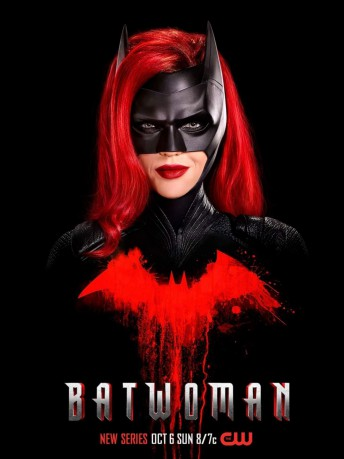

")
 
 IMDB-Wertung: 3.4 / 10
IMDB-Wertung: 3.4 / 10  Tomatometer: 76
Tomatometer: 76  Metascore:
Metascore: 
Kate Kane (Ruby Rose) kommt aus einer schwierigen Familie und ist die Cousine von Bruce Wayne, dem Philanthropen der Stadt Gotham. Drei Jahre, nachdem gleichzeitig Bruce Wayne und Batman aus Gotham verschwanden, nimmt das Verbrechen dort wieder überhand. Kate Kane, die Batmans Geheimnis entschlüsselt hatte, macht sich als Batwoman daran, dem Verbrechen Einhalt zu gebieten. Gleichzeitig versucht sie, das am Boden liegende Wayne Enterprises wiederzubeleben und den Bewohnern von Gotham so neue Hoffnung zu geben.
Jahr: 2019
Dauer: 42 Minuten
FSK: Not Rated
Land: USA Studio: The CWTonspuren: - , - , - , - , - ,
Untertitel: Deutsch, Englisch,
Auflösung: 720p (1280x640) Größe: 1402 MB
Genre: Action, Drama, Sci-Fi, Abenteuer, Krimi, TV-Serie
Regisseur: Holly Dale, Marcos Siega, Michael A. Allowitz, Laura Belsey, Dermott Downs
Drehbuch: Caroline Dries, Bill Finger, Bob Kane, Jerry Shandy, Natalie Abrams
Soundtrack:
Darsteller:
 Ruby Rose als Kate Kane, 22 episodes, 2019-2020
Ruby Rose als Kate Kane, 22 episodes, 2019-2020 Rachel Skarsten als Alice, 21 episodes, 2019-2020
Rachel Skarsten als Alice, 21 episodes, 2019-2020 Dougray Scott als Colonel Jacob Kane, 21 episodes, 2019-2020
Dougray Scott als Colonel Jacob Kane, 21 episodes, 2019-2020 Sebastian Roché als Dr. Ethan Campbell, 4 episodes, 2019-2020
Sebastian Roché als Dr. Ethan Campbell, 4 episodes, 2019-2020 John Emmet Tracy als August Cartwright, 3 episodes, 2019-2020
John Emmet Tracy als August Cartwright, 3 episodes, 2019-2020 Giles Panton als Shane McKillen, 2 episodes, 2019
Giles Panton als Shane McKillen, 2 episodes, 2019 LaMonica Garrett als Anti-Monitor, 1 episode, 2019
LaMonica Garrett als Anti-Monitor, 1 episode, 2019 Stephen Amell als Green Arrow, 1 episode, 2019
Stephen Amell als Green Arrow, 1 episode, 2019 Caity Lotz als Sara Lance, 1 episode, 2019
Caity Lotz als Sara Lance, 1 episode, 2019 Brandon Routh als Clark Kent, 1 episode, 2019
Brandon Routh als Clark Kent, 1 episode, 2019 Katherine McNamara als Mia Smoak, 1 episode, 2019
Katherine McNamara als Mia Smoak, 1 episode, 2019 Gabriel Mann als Tommy Elliot, 1 episode, 2019
Gabriel Mann als Tommy Elliot, 1 episode, 2019 Jim Pirri als Bertrand Eldon, 1 episode, 2019
Jim Pirri als Bertrand Eldon, 1 episode, 2019 Dominic Purcell als Heat Wave, 1 episode, 2019
Dominic Purcell als Heat Wave, 1 episode, 2019 Tyler Hoechlin als Clark Kent, 1 episode, 2019
Tyler Hoechlin als Clark Kent, 1 episode, 2019 Melissa Benoist als Kara Danvers, 1 episode, 2019
Melissa Benoist als Kara Danvers, 1 episode, 2019 Chris Shields als Mayor Michael Akins, 1 episode, 2019
Chris Shields als Mayor Michael Akins, 1 episode, 2019 Garfield Wilson als The Rifle, 1 episode, 2019
Garfield Wilson als The Rifle, 1 episode, 2019 Grant Gustin als Barry Allen, 1 episode, 2019
Grant Gustin als Barry Allen, 1 episode, 2019 Loretta Walsh als Roxanna, 1 episode, 2019
Loretta Walsh als Roxanna, 1 episode, 2019 Jon Cryer als Lex Luthor, 1 episode, 2019
Jon Cryer als Lex Luthor, 1 episode, 2019Datei: X:\Comic-Serien\Batwoman S01\Batwoman S01E01.mkv seit 30.12.2019
Festplatte: Comicverfilmungen+MusikCD
 Es gibt insgesamt 34 Filme in der Gruppe 'Comic-Serien'
Es gibt insgesamt 34 Filme in der Gruppe 'Comic-Serien'